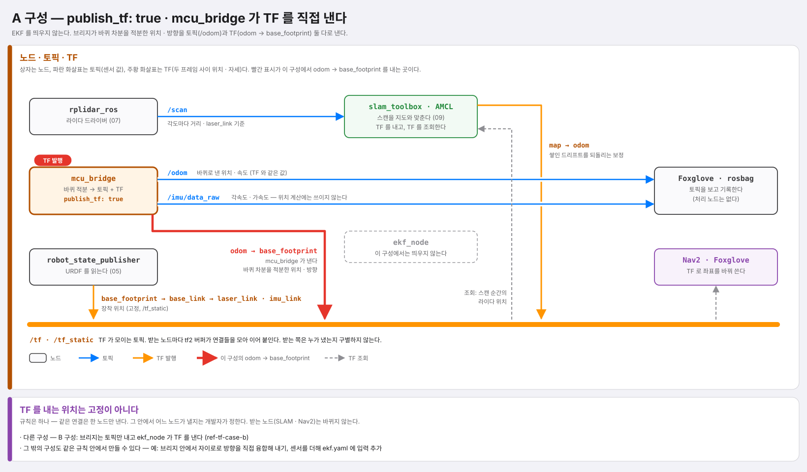
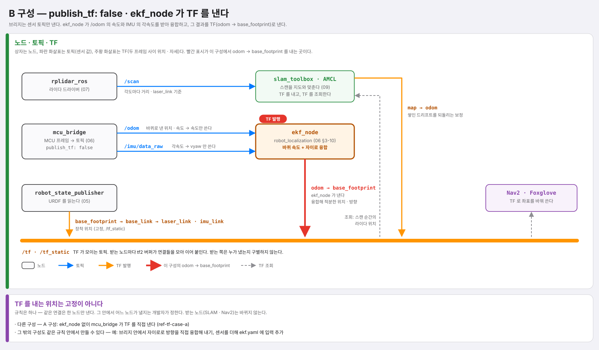
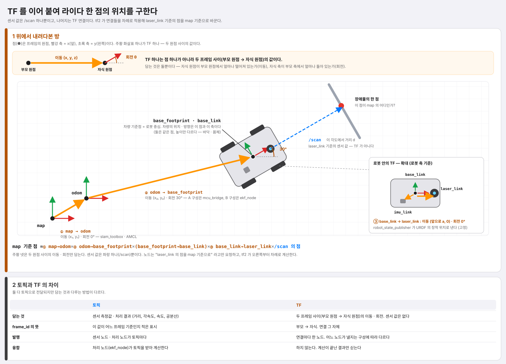

부록 F · 토픽과 TF
토픽과 TF — 센서 값과 프레임 사이 위치 관계
센서 값은 토픽으로 나간다. 처리 노드가 그 값을 계산해 프레임 사이의 상대 위치 · 자세만 TF 로 낸다. 받는 노드는 TF 를 이어 붙여 좌표를 바꾼다. 아래 그림은 이 프로젝트의 노드 이름 · 토픽 이름 · 프레임 이름으로 그렸다.
1. odom → base_footprint 를 누가 내는가 — 두 구성
같은 연결 odom → base_footprint 가 구성에 따라 다른 노드에서 나온다. mcu_bridge 의 publish_tf 로 고른다.
받는 노드(SLAM · Nav2)는 /tf 에서 연결만 받으므로, 누가 냈는지에 따라 바뀌지 않는다.
1-1. A 구성 — publish_tf: true
EKF 를 띄우지 않는다. 브리지가 바퀴 차분을 적분한 위치 · 방향을 /odom 토픽과 TF 둘 다로 낸다. 방향은 바퀴 값만으로 정해진다.

1-2. B 구성 — publish_tf: false
브리지는 /odom · /imu/data_raw 토픽만 낸다. ekf_node 가 /odom 의 속도와 IMU 의 vyaw 를 융합해 TF 를 낸다(06 §3-10).
브리지가 적분한 pose 는 쓰지 않으므로, 이 구성의 TF 는 /odom 의 pose 와 조금씩 다르다.

TF 를 내는 위치는 고정이 아니다. 규칙은 하나 — 같은 연결은 한 노드만 낸다. 둘이 같은 연결을 내면 두 값이 번갈아 들어와 위치가 떨린다. 이 규칙 안에서 어느 노드가 낼지는 개발자가 정한다. 예를 들어 브리지 안에서 자이로로 방향을 직접 융합해 내는 구성도 만들 수 있다.
2. TF 를 이어 붙여 한 점의 위치를 구한다
TF 하나는 점 하나가 아니라 두 프레임 사이(부모 원점 → 자식 원점)의 값이다. 담는 것은 자식 원점까지의 이동과 자식 축이 돈 회전, 둘뿐이다.
map 원점에서 주황 화살표 ① ② ③ 을 차례로 따라가고 마지막에 /scan 의 거리를 더하면 장애물 한 점의 map 기준 위치가 된다.
② 는 A 구성이면 mcu_bridge, B 구성이면 ekf_node 가 낸 연결이다. 메시지의 frame_id 는 "이 값이 어느 프레임 기준인가"를 적은 표시이고, TF 를 발행하는 것이 아니다.

관련 단계
- 05 · TF2와 URDF — 트리 구조,
robot_state_publisher, 조회 API - 06 · MCU 브리지 (C++) —
/odom·/imu/data_raw발행, §3-10 EKF - 07 · LiDAR — /scan —
laser_link기준의 스캔 - 09 · SLAM과 Nav2 —
map → odom보정